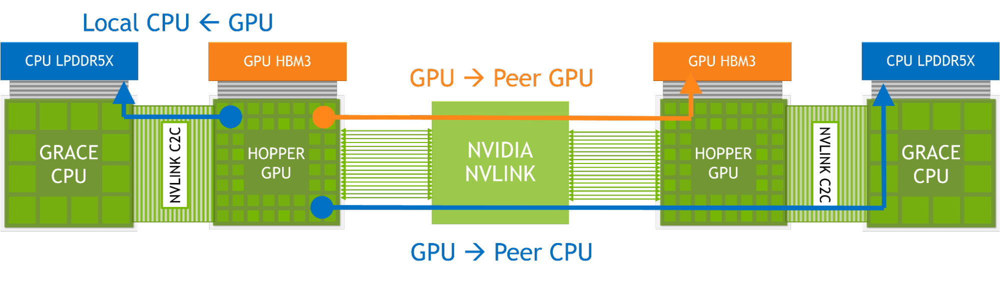

4.17. Extended GPU Memory#
The Extended GPU Memory (EGM) feature, utilizing the high-bandwidth NVLink-C2C, facilitates efficient access to all system memory by GPUs, in both single-node and multi-node systems. EGM applies to integrated CPU-GPU NVIDIA systems by allowing physical memory allocation that can be accessed from any GPU thread within the setup. EGM ensures that all GPUs can access its resources at the speed of either GPU-GPU NVLink or NVLink-C2C.
{kind=link}

In this setup, memory accesses occur via the local high-bandwidth NVLink-C2C. For remote memory accesses, GPU NVLink and, in some cases, NVLink-C2C are used. With EGM, GPU threads gain the capability to access all available memory resources, including CPU attached memory and HBM3, over the NVSwitch fabric.
4.17.1. Preliminaries#
Before diving into API changes for EGM functionalities, we are going to cover currently supported topologies, identifier assignment, prerequisites for virtual memory management, and CUDA types for EGM.
4.17.1.1. EGM Platforms: System topology#
Currently, EGM can be enabled in several platforms: (1) Single-Node, Single-GPU: Consists of an Arm-based CPU, CPU attached memory, and a GPU. Between the CPU and the GPU there is a high bandwidth C2C (Chip-to-Chip) interconnect. (2) Single-Node, Multi-GPU: Consists of ARM-based CPUs, each with attached memory, and multiple GPUs connected through an NVLink-based network. (3) Multi-Node, Multi-GPU: Two or more single-node systems, each as in (1) or (2) above, connected through an NVLink-based network.
Note
Using cgroups to limit available devices will block routing over EGM
and cause performance issues. Use CUDA_VISIBLE_DEVICES instead.
4.17.1.2. Socket Identifiers: What are they? How to access them?#
NUMA (Non-Uniform Memory Access) is a memory architecture used in multi-processor computer systems such that the memory is divided into multiple nodes. Each node has its own processors and memory. In such a system, NUMA divides the system into nodes and assigns a unique identifier (numaID) to every node.
EGM uses the NUMA node identifier which is assigned by the operating
system. Note that, this identifier is different from the ordinal of a
device and it is associated with the closest host node. In addition to
the existing methods, the user can obtain the identifier of the host
node (numaID) by calling cuDeviceGetAttribute
with CU_DEVICE_ATTRIBUTE_HOST_NUMA_ID attribute type as follows:
int numaId;
cuDeviceGetAttribute(&numaId, CU_DEVICE_ATTRIBUTE_HOST_NUMA_ID, deviceOrdinal);
4.17.1.3. Allocators and EGM support#
Mapping system memory as EGM does not cause any performance issues. In
fact, accessing a remote socket’s system memory mapped as EGM is going
to be faster. Because, with EGM traffic is guaranteed to be routed over
NVLinks. Currently, cuMemCreate and cudaMemPoolCreate allocators are
supported with appropriate location type and NUMA identifiers.
4.17.1.4. Memory management extensions to current APIs#
Currently, EGM memory can be mapped with Virtual Memory (cuMemCreate) or
Stream Ordered Memory (cudaMemPoolCreate) allocators. The user is
responsible for allocating physical memory and mapping it to a virtual
memory address space on all sockets.
Note
Multi-node, multi-GPU platforms require interprocess communication. Therefore we encourage the reader to see Chapter 4.15.
Note
We encourage readers to read CUDA Programming Guide’s Chapter 4.16 and Chapter 4.3 for a better understanding.
New CUDA property types have been added to APIs for allowing those approaches to understand allocation locations using NUMA-like node identifiers:
CUDA Type |
Used with |
|
|
|
|
Note
Please see CUDA Driver API and CUDA Runtime Data Types to find more about NUMA specific CUDA types.
4.17.2. Using the EGM Interface#
4.17.2.1. Single-Node, Single-GPU#
Any of the existing CUDA host allocators as well as system allocated memory can be used to benefit from high-bandwidth C2C. To the user, local access is what a host allocation is today.
Note
Refer to the tuning guide for more information about memory allocators and page sizes.
4.17.2.2. Single-Node, Multi-GPU#
In a multi-GPU system, the user has to provide host information for
the placement. As we mentioned, a natural way to express that
information would be by using NUMA node IDs and EGM follows this
approach. Therefore, using the cuDeviceGetAttribute function the
user should be able to learn the closest NUMA node id. (See Socket Identifiers: What are they? How to access them?).
Then the user can allocate and manage EGM memory using VMM (Virtual
Memory Management) API or CUDA Memory Pool.
4.17.2.2.1. Using VMM APIs#
The first step in memory allocation using Virtual Memory Management APIs
is to create a physical memory chunk that will provide a backing for the
allocation. See CUDA Programming Guide’s Virtual Memory Management section
for more details. In EGM allocations the user has to explicitly provide
CU_MEM_LOCATION_TYPE_HOST_NUMA as the location type and
numaID as the location identifier. Also in EGM, allocations must
be aligned to appropriate granularity of the platform. The following
code snippet shows allocating physical memory with cuMemCreate:
CUmemAllocationProp prop{};
prop.type = CU_MEM_ALLOCATION_TYPE_PINNED;
prop.location.type = CU_MEM_LOCATION_TYPE_HOST_NUMA;
prop.location.id = numaId;
size_t granularity = 0;
cuMemGetAllocationGranularity(&granularity, &prop, MEM_ALLOC_GRANULARITY_MINIMUM);
size_t padded_size = ROUND_UP(size, granularity);
CUmemGenericAllocationHandle allocHandle;
cuMemCreate(&allocHandle, padded_size, &prop, 0);
After physical memory allocation, we have to reserve an address space and map it to a pointer. These procedures do not have EGM-specific changes:
CUdeviceptr dptr;
cuMemAddressReserve(&dptr, padded_size, 0, 0, 0);
cuMemMap(dptr, padded_size, 0, allocHandle, 0);
Finally, the user has to explicitly protect mapped virtual address
ranges. Otherwise access to the mapped space would result in a crash.
Similar to the memory allocation, the user has to provide
CU_MEM_LOCATION_TYPE_HOST_NUMA as the location type and
numaId as the location identifier. Following code snippet create
an access descriptors for the host node and the GPU to give read and
write access for the mapped memory to both of them:
CUmemAccessDesc accessDesc[2]{{}};
accessDesc[0].location.type = CU_MEM_LOCATION_TYPE_HOST_NUMA;
accessDesc[0].location.id = numaId;
accessDesc[0].flags = CU_MEM_ACCESS_FLAGS_PROT_READWRITE;
accessDesc[1].location.type = CU_MEM_LOCATION_TYPE_DEVICE;
accessDesc[1].location.id = currentDev;
accessDesc[1].flags = CU_MEM_ACCESS_FLAGS_PROT_READWRITE;
cuMemSetAccess(dptr, size, accessDesc, 2);
4.17.2.2.2. Using CUDA Memory Pool#
To define EGM, the user can create a memory pool on a node and give
access to peers. In this case, the user has to explicitly define
cudaMemLocationTypeHostNuma as the location type and numaId
as the location identifier. The following code snippet shows creating a
memory pool cudaMemPoolCreate:
cudaSetDevice(homeDevice);
cudaMemPoolProps props{};
props.allocType = cudaMemAllocationTypePinned;
props.location.type = cudaMemLocationTypeHostNuma;
props.location.id = numaId;
cudaMemPoolCreate(&memPool, &props);
Additionally, for direct connect peer access, it is also possible to use
the existing peer access API, cudaMemPoolSetAccess. An example
for an accessingDevice is shown in the following code snippet:
cudaMemAccessDesc desc{};
desc.flags = cudaMemAccessFlagsProtReadWrite;
desc.location.type = cudaMemLocationTypeDevice;
desc.location.id = accessingDevice;
cudaMemPoolSetAccess(memPool, &desc, 1);
When the memory pool is created, and accesses are given, the user can
set created memory pool to the residentDevice and start allocating
memory using cudaMallocAsync:
cudaDeviceSetMemPool(residentDevice, memPool);
cudaMallocAsync(&ptr, size, memPool, stream);
Note
EGM is mapped with 2MB pages. Therefore, users may encounter more TLB misses when accessing very large allocations.
4.17.2.3. Multi-Node, Multi-GPU#
Beyond memory allocation, remote peer access does not have EGM-specific modification and it follows CUDA inter process (IPC) protocol. See CUDA Programming Guide for more details in IPC.
The user should allocate memory using cuMemCreate and again the
user has to explicitly provide CU_MEM_LOCATION_TYPE_HOST_NUMA as
the location type and numaID as the location identifier. In
addition CU_MEM_HANDLE_TYPE_FABRIC should be defined as the
requested handle type. The following code snippet shows allocating
physical memory on Node A:
CUmemAllocationProp prop{};
prop.type = CU_MEM_ALLOCATION_TYPE_PINNED;
prop.requestedHandleTypes = CU_MEM_HANDLE_TYPE_FABRIC;
prop.location.type = CU_MEM_LOCATION_TYPE_HOST_NUMA;
prop.location.id = numaId;
size_t granularity = 0;
cuMemGetAllocationGranularity(&granularity, &prop,
MEM_ALLOC_GRANULARITY_MINIMUM);
size_t padded_size = ROUND_UP(size, granularity);
size_t page_size = ...;
assert(padded_size % page_size == 0);
CUmemGenericAllocationHandle allocHandle;
cuMemCreate(&allocHandle, padded_size, &prop, 0);
After creating allocation handle using cuMemCreate the user can
export that handle to the other node, Node B, calling
cuMemExportToShareableHandle:
cuMemExportToShareableHandle(&fabricHandle, allocHandle,
CU_MEM_HANDLE_TYPE_FABRIC, 0);
// At this point, fabricHandle should be sent to Node B via TCP/IP.
On Node B, the handle can be imported using
cuMemImportFromShareableHandle and treated as any other fabric
handle
// At this point, fabricHandle should be received from Node A via TCP/IP.
CUmemGenericAllocationHandle allocHandle;
cuMemImportFromShareableHandle(&allocHandle, &fabricHandle,
CU_MEM_HANDLE_TYPE_FABRIC);
When handle is imported at Node B, then the user can reserve an address space and map it locally in a regular fashion:
size_t granularity = 0;
cuMemGetAllocationGranularity(&granularity, &prop,
MEM_ALLOC_GRANULARITY_MINIMUM);
size_t padded_size = ROUND_UP(size, granularity);
size_t page_size = ...;
assert(padded_size % page_size == 0);
CUdeviceptr dptr;
cuMemAddressReserve(&dptr, padded_size, 0, 0, 0);
cuMemMap(dptr, padded_size, 0, allocHandle, 0);
As the final step, the user should give appropriate accesses to each of the local GPUs at Node B. An example code snippet that gives read and write access to eight local GPUs:
// Give all 8 local GPUS access to exported EGM memory located on Node A. |
CUmemAccessDesc accessDesc[8];
for (int i = 0; i < 8; i++) {
accessDesc[i].location.type = CU_MEM_LOCATION_TYPE_DEVICE;
accessDesc[i].location.id = i;
accessDesc[i].flags = CU_MEM_ACCESS_FLAGS_PROT_READWRITE;
}
cuMemSetAccess(dptr, size, accessDesc, 8);